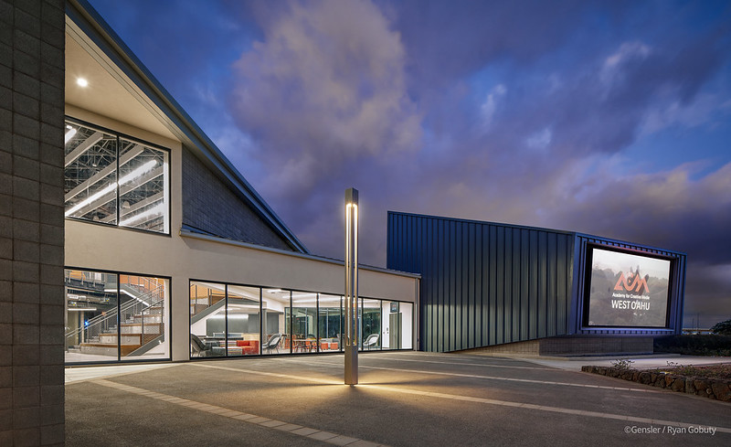
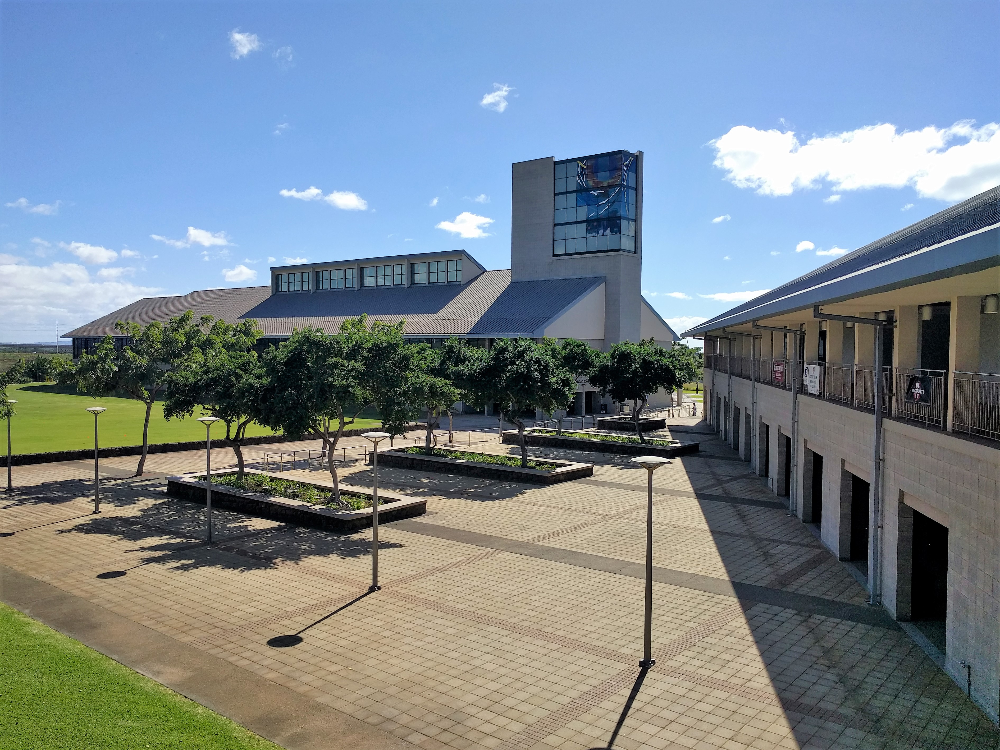
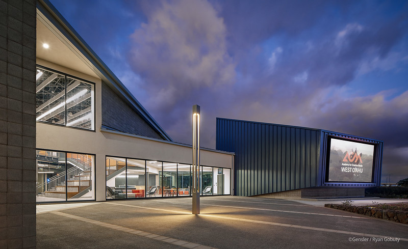
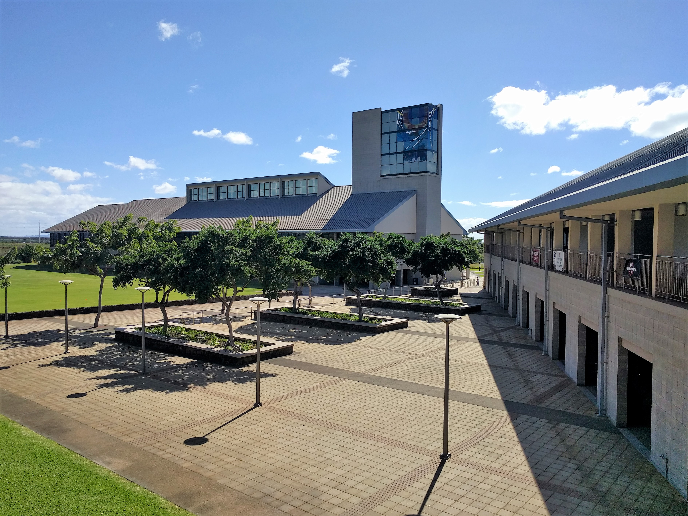

ACM Promo Video
 



About ACM
The Academy of Creative Media (ACM) is the school representing students majoring in Creative Media. ACM emphasizes many forms of media, such as broadcasting, mass media, social media, movies/videos, print-making, infographics, and other forms of digital media. Aspects on these forms focus on story telling, narrative analysis, and other applied elements of production. At UH West Oahu, the major consist of a general track, along with other concentrations specializing in communications and new media technlogies, design and media, or game design and development.
Working with Adobe After Effects
During my time at UH- West Oahu, I took a course on animation and special effects (CM 251). One of our projects included creating a short promotional video to advertise the ACM major and the new available spaces/buildings for ACM students. Although the project was done individually, our class took still shots around the campus together for available use of our projects. We then chose the pictures that fit accordingly based on the theme and narrative of our own video.
My main approach for this project was to create basic shapes that acted as short transitions to the next still shot of the ACM spaces. I wanted the transitions to be clean and sharp, synching the graphic transitions to the rhythm or beat of a background song with a fast-tempo. In Adobe After Effects, I was able to experiment with transition effects on simple shapes. A tool that I found useful in the application was the key frame tool, which allowed me to match the timing of the beat with a change in transition. The blur effect also enhanced some of my animations shots into 3-D illusions, ultimately enabling me to achieve a quick-paced motion transition.
Overall, I was able to learn two main components from this project. One included the practical applications and basic skills of using Adobe After Effects. The other involves the community aspect of working with my peers. I was able to bounce ideas off my classmates to identify how to improve our own technical styles and approaches towards the video. The collaborative effort also made me view refreshing perspectives in a new light, in which the utilization of similar tools in an application like After Effects can be done in a number of different ways. Similarly, solving problems in software engineering can be done via a number of methods due to everyone’s unique strategy and approach.
More information on ACM at UH-West Oahu can be found here: